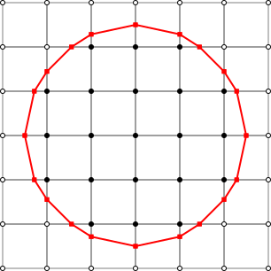

Welcome to Tom's Portfolio
Hi, Im Tom ,
Welcome to my Portfilio.
I'm a Student at the University of Plymouth,
Currently studying Software Engineering
My Main Projects to Date:
Green M&M
A Python Discord Bot. Built to Download and play Music/Videos From Youtube. The Project is free and Open-Source at my GitHub page. Currently it supports video queues , Video Descriptions , Moive night command which can find a display a moive from imdb. The project can be found here
Link

Marching Squres Algorithum
A Simple webpage made with HTML and JS that displays a marching squares algorithum each time it is refreshed. Made in 2 hrs. Can be found here Link

The Tower
Made for my Year 13 Coursework. It is a Unity game programmed in C# . It's a rogue-like top down shooter with mutiple enimies. Designed in a OOP fashion all entities are related and inherit from one another. A little unfinished around the edges so may encouter bugs. Link